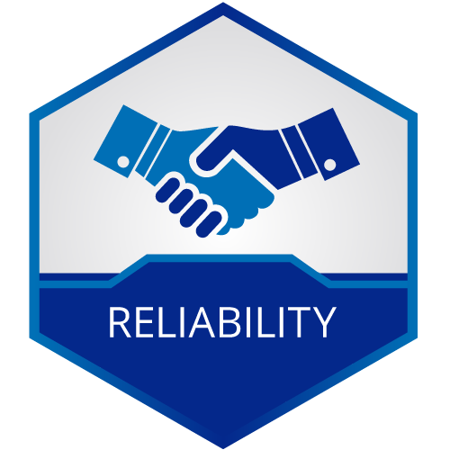
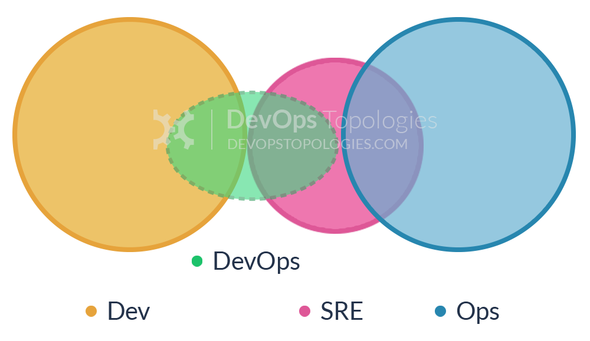
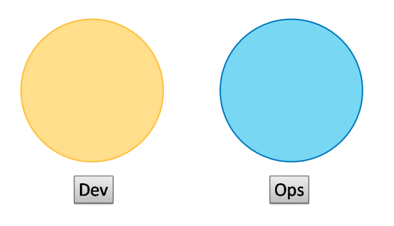

SRE 宣言
在 2019-04-02 Tuesday 发布于 DevOps 分类 • 1 min read
SRE 宣言¶
今天(2019年4月1日)是个对于我来说值得永远铭记的日子.
从今天起, 我由一名普通的运维转变为一名普通的SRE. 我们专注于: 提高效率, 提高业务连续性, 最终提高用户满意度. 无论是公司的客户, 还是分公司、子公司的用户, 亦或是IT开发分部的同事, 你们都是我们的服务"用户". 我会用我的十分努力, 来换得效率的+1%, 来换得业务连续性的+1s, 来换得你们点赞与笑脸的+1+1.
SRE 成立背景¶
过去一段时间, 我们发现我们运维切实地存在以下问题:
- 运维和开发衔接不畅. 运维分部是专业组的组织架构, 就拿新系统上线来举例, 开发几乎需要问遍运维分部内的各个专业组, 从: 主机、中间件、数据库、网络再到安全、监控等等等等。而且时长面临着对方“不是我负责的，你找其他人吧”式的被踢皮球的感受。
- 部署规模越来越庞大。随着各类私有云、公有云的引入，微服务架构的引入，以及数字化转型，竞争的激烈。近些年，系统的部署规模较前年甚至都有成倍数的增长，现有的运维模式对于越来越庞大的规模有些力不从心。
- 新技术的引入。还是上面提到的，云的引入，容器的引入，开源技术栈（包括：web server，中间件，MQ，缓存，NoSQL...)的引入以及随之而来的工具链的引入(Ansible, SaltStack, Jenkins, Zabbix, ELK...)也带来技术链的爆炸式增长. 而这些也都是需要运维具有相应的技术储备的.
- 开发分部DevOps. 开发分部也在推动DevOps的体系. 我们的体系也要和开发分部相对应.
- 技术能力的积累和变现.
何为SRE¶
SRE¶

定义:
SRE 是谷歌针对DevOps的生产实践和运行模型. 软件由开发团队显示"交接给"运行软件的团队, 即Site Reliability Engineer(SRE, 网站可靠性工程团队). 在这个模型中, Dev团队需要向 SRE 团队提供测试证据(日志, 指标等), 证明他们的软件已经达到一个 SRE 团队认为足够好的标准.
至关重要的是, SRE 团队可以拒绝不符合运维标准的软件(包括开发分部和运维分部的软件), 要求开发人员在投入生产之前改进代码. Dev 和 SRE之间的协作围绕着运维标准展开, 但是, 一旦 SRE 团队对代码满意, 他们(而不是Dev团队)就会在生产环境中提供支持.这个模型只适用于工程和组织成熟度较高的组织, 如果运行不当, 可能变为 "Dev 和 Ops筒仓"的模式.
节选自: DevOps团队结构类型汇总：总有一款适合你


SRE 的目标¶
SRE的目标有"三化", 也是承接了实现公司的"三化"战略. SRE目标为:
- 平台化
- 服务化
- 自动化
SRE 运维体系¶
SRE 运维体系有"三驾马车".
- SRE. 位于金字塔尖, 对外提供服务.
- 技术服务. 即: 专业组. "使能"SRE团队.
- 运维开发. 新成立(目前还未成立, 过渡期). "赋能"SRE团队. 打造以"三化"为目标的平台, 工具集.
SRE 建设阶段¶
这是公司运维分部近十年来的首次变革, 变革需要逐步稳步推进. SRE 建设也会分阶段进行:
当前阶段的主要工作是:
-
扎口
- 监控告警扎口
- 应用, 数据库发布扎口
- 资源, 集成部署扎口
-
工具平台建设
- 自动化运维平台建设
- 统一监控告警平台建设
总结¶
-
最终目标
- 提高效率
- 提高业务连续性
- 最终提高客户满意度
-
分阶段, 分步骤推进
- 运维团队以往积累了一些优秀的品质, 但也慢慢积累了惰性. 懒惰, 固步自封要被严肃处理.
- 用于探索和实践. 敢于试错, 从失败中吸取经验教训.